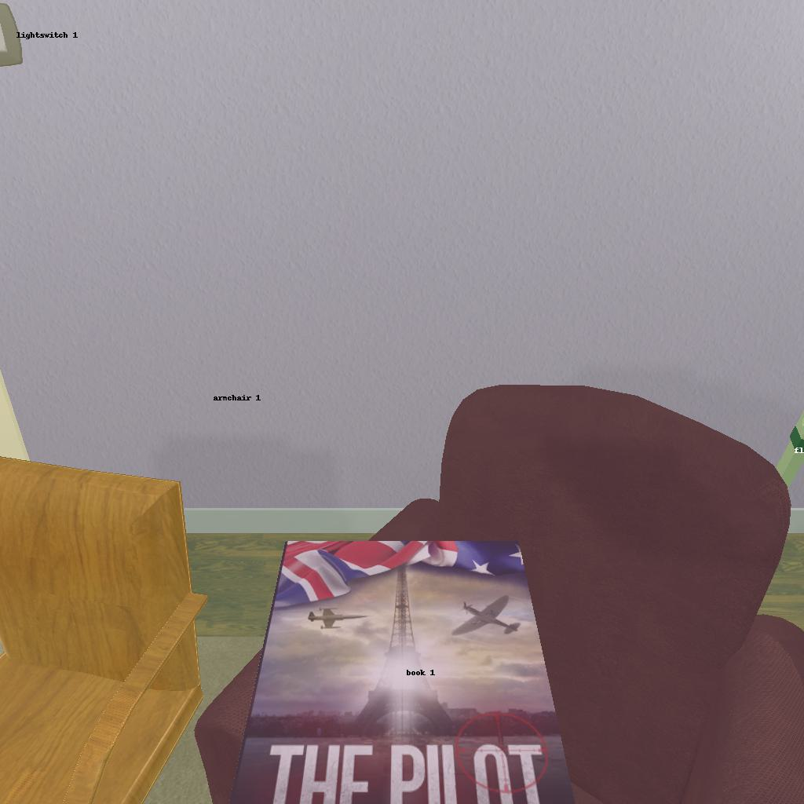

---------------------------------------------------------task: 5---------------------------------------------------------
--------------------------------------------------------------------------------------------------------------------------------------------------------------------
--------------------------------------------------------------------------------------------------------------------------------------------------------------------
Step:--------------------------------------------------------------------------19-------------------------------------------------------------------------------
----------------------------------------
VLM Prompt:
Image1:
Image2:
Image3:
**Instruction**
1. Analyze the provided image to identify all visible household objects, focusing on those relevant to the task description "put some book on armchair."
2. Use the analysis of the image and the task hint "The agent must find an object of the desired type, pick it up, find the correct location to place it, and put it down there." to answer the question: what is the most reasonable action in the choices for the task description "put some book on armchair"?
4. Decide and write the answer using the template: The answer is: (i): , where i is the real number. If there is no desired object in the image, search every place based on **Initial Observation** to find the object. And if no one is exactly correct, choose a similar answer.
**Initial Observation**
You are in the middle of a room. Looking quickly around you, you can see armchair (1), sofa (1), coffeetable (1), drawer (1-4), sidetable (1-3), dresser (1)
**Answer Choices**
(1): go to sofa 1
(2): go to coffeetable 1
(3): go to drawer 1
(4): go to sidetable 1
(5): go to dresser 1
(6): go to drawer 2
(7): go to drawer 3
(8): go to drawer 4
(9): go to sidetable 2
(10): go to sidetable 3
(11): use floorlamp 1
**Answer**
Let's think step by step by following the instructions.
----------------------------------------
----------------------------------------
Original Response:
The task description is "put some book on armchair." From the images provided, we can observe that there is already a book on the armchair labeled "book 1." Since the task is to put "some book" on the armchair and there is already one there, it seems no further action is needed regarding placing a book on the armchair.
However, we must consider that the task might require placing an additional book on the armchair. Since no other books are visible in the image, we need to search for another book based on the **Initial Observation**. The objects listed in the initial observation that could possibly contain a book are the drawer (1-4), sidetable (1-3), and dresser (1). The answer choices provided do not include searching the armchair or the existing book, so we can assume we need to find another book.
Given the options and following the task hint, the most reasonable action would be to search in the locations where books are most likely to be found, which would be in drawers or on side tables, as dressers are less commonly used for storing books.
The answer is: (3): go to drawer 1. This is the first option to search for a book, and if not found there, the agent can proceed to check other drawers or sidetables as needed.
----------------------------------------
----------------------------------------
>>> Refine Original VLM Response and Get Pure Action: go to drawer 1
----------------------------------------
-----------------------------------------------------------------
Running time: 11.488739967346191 seconds
Total Money: 3.0030699999999997
-----------------------------------------------------------------
-----------------------------------------------------------------
Text Observation:You arrive at loc 3. The drawer 1 is open. On the drawer 1, you see a houseplant 1, a television 1, a box 1, a wateringcan 1, a keychain 1, a pencil 1, and a pencil 2.
-----------------------------------------------------------------
UNSUCCEED